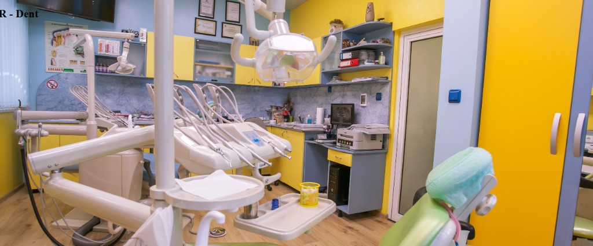

Защо са важни редовните прегледи?
Ранното откриване на кариес, възпаления и проблеми със захапката намалява нуждата от по-сложно лечение и запазва естествените зъби за по-дълго.
Знаем, че първата консултация често е свързана с въпроси. Подготвихме най-важното, за да знаете какво да очаквате и как протича лечението.
Ранното откриване на кариес, възпаления и проблеми със захапката намалява нуждата от по-сложно лечение и запазва естествените зъби за по-дълго.
Препоръчително е профилактичен преглед поне 2 пъти годишно. При повишен риск (бременност, пушене, пародонтални проблеми) посещенията са по-чести.
Обстоен преглед, разяснение на състоянието и приоритетите, както и персонализиран лечебен план със следващи стъпки.

Да, ако имате предишни снимки, епикризи или планове за лечение, те са полезни за по-точна оценка.
Обикновено между 30 и 60 минути, в зависимост от сложността на случая и необходимата диагностика.
При определени случаи - да. При по-комплексни ситуации първо финализираме диагностиката и плана.
Запишете удобен час и направете първата стъпка към по-здрава, красива и уверена усмивка.